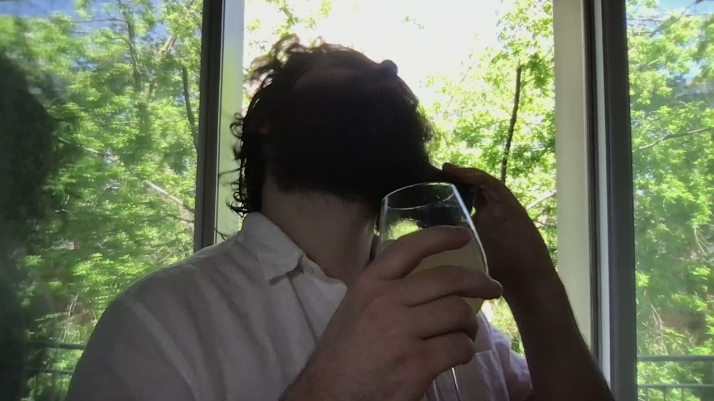
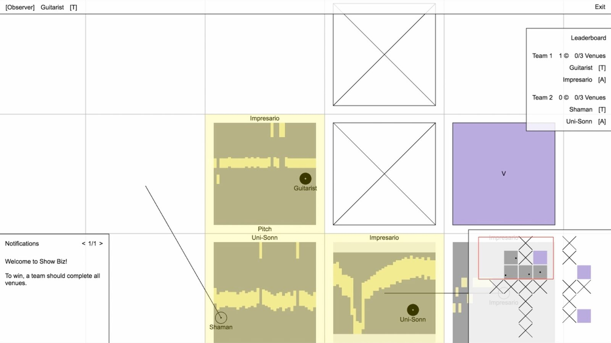

ScoreCraft: Show Biz @ NIME 2022
Project Description
A performance of the multiplayer music game ScoreCraft.
About ScoreCraft
ScoreCraft is a multiplayer music game exploring online music making mediated through gameplay. Each player controls the game by producing sounds, so effectively by playing the game the players are making music.
ScoreCraft is structured as a modular environment consisting of a collection of mini games and scenarios. Each mini game requires the players to produce a different, particular set of sounds in order to interact with the game, therefore, functioning as low-level musical material. The scenarios determine how the mini games are arranged on a 2d board, organising the low-level musical material embedded in the mini games and driving the high-level musical form.
Type of submission
“New NIME” - traditional NIME music sessions aimed at showcasing pieces performed or composed with new interfaces for musical expression.
Program Notes
A mockumentary style interpretation of the ScoreCraft scenario Show Biz produced for NIME 2022.
ScoreCraft is a multiplayer music game exploring online music making mediated through gameplay. Each player controls the game by producing sounds, so effectively by playing the game the players are making music.
Players:
Guitarist - Elliot Simpson
Impresario - Jana De Troyer
Shaman- Shira Agmon
Uni-Sonn - Oded Geizhals
Money-Man - Yuval Adler
Host - Goni Peles
Public domain and creative commons compositions and audio samples used in the video:
[guitar compositions]
Romance Anonimo
Leo Brouwer - Estudio Sencillo 1
Giuseppe Antonio Brescianello - Partita 1, Allegro
Wenzel Thomas Matiegka - Sonata op. 23, Menuetto
[audio samples]
from https://freesound.org/
"Laser Machine Gun" by sonically_sound (CC BY 4.0)
"Metallic Zing - 3" by Speedenza (CC BY-NC 3.0)
"Abstract Spaceship, Flyby, Ascending, A.wav" by InspectorJ (CC BY 4.0)
"WeHaveLiftoff.wav" by aj_heels (CC BY 4.0)
"Mozart40.wav" by Numes (CC Sampling+ 1.0)
from https://imslp.org/
"Clarinet Quintet in A major, K.581" performed by Anthony McGill (clarinet), A Far Cry Ensemble, and musicians from Marlboro (CC BY-NC 4.0)
"Die Zauberflöte, K.620 - Overture" performed by Czech National Symphony Orchestra (CC BY 3.0)
Media

▶

Ethics Statement
Inclusion and socio-economic fairness
To participate in the workshop one is required to have a computer, fast internet connection, headphones, microphone(s), and musical instrument(s). That said, classical musical education is not needed, and playing the game can also help musicians develop control over their instrument.
Multiple, redundant or concurrent publications
We submit a similar proposal to TENOR 2022, but the selection of mini games and scenarios in the NIME edition of the workshop is different, therefore, we believe we don’t violate the following principle:
“It is considered unacceptable to submit the same manuscript to more than one journal or conference proceedings concurrently.”
Although both workshops assume no previous experience, they will cover different game content.
Acknowledgements
The authors would like to thank ScoreCraft’s community, everyone who participated in the past playtests and presentations, contributed ideas, and offered feedback.